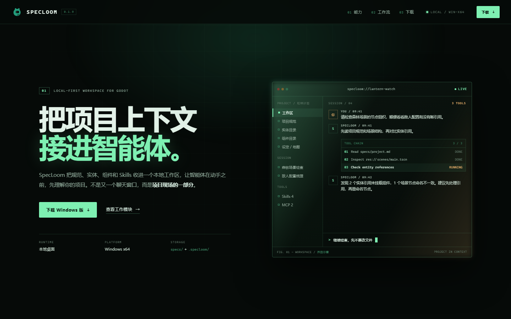
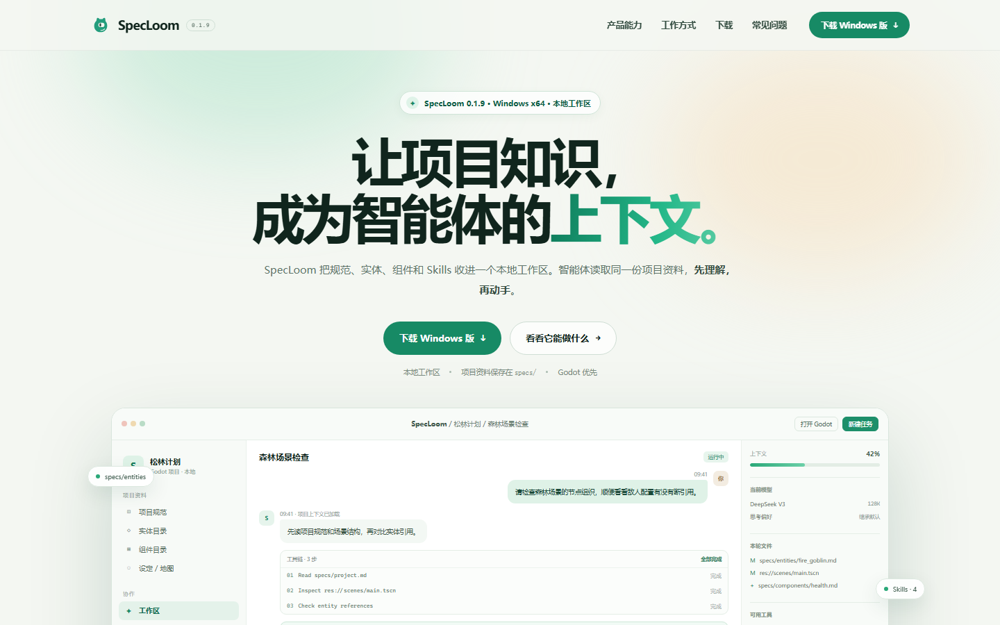
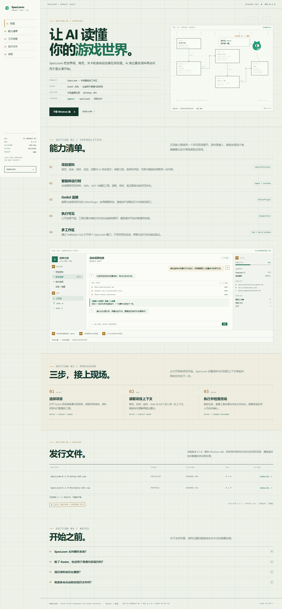

01ENGINE BAY / DARK
深色引擎舱
把 SpecLoom 放在“开发工具”的位置上：深色底、终端式工作区、工具链与本地状态成为首屏主角。
- 适合技术型访客与 Godot 开发者
- 品牌绿作为信号色，不做大面积装饰
- 产品界面用代码感构图，而非截图堆叠
BEFORE THE BUILD
三版首页使用同一套产品事实与下载文件，只改变视觉气质、叙事节奏和信息密度。先把方向定下来，再进入结构规格与正式实现。

把 SpecLoom 放在“开发工具”的位置上：深色底、终端式工作区、工具链与本地状态成为首屏主角。

把“看得懂、愿意下载”放在第一位：大标题、柔和光晕、完整产品窗口和清晰的下载路径。

把“Spec”做成页面本身：蓝图网格、章节编号、关系图、FIG. 02 工作区图版与会动的络络。已落地为正式站。
先看气质，再看细节。三版的功能描述、版本号和下载文件一致；差异在首屏语气、界面呈现方式和信息密度。点击“整页预览”可以滚动查看完整页面，移动端链接是 390px 宽的整页截图。
这些是设计样稿，尚未替换正式站点，也没有接入下载探测或导航交互。选定方向后，再确定页面结构、响应式规则和实现范围。